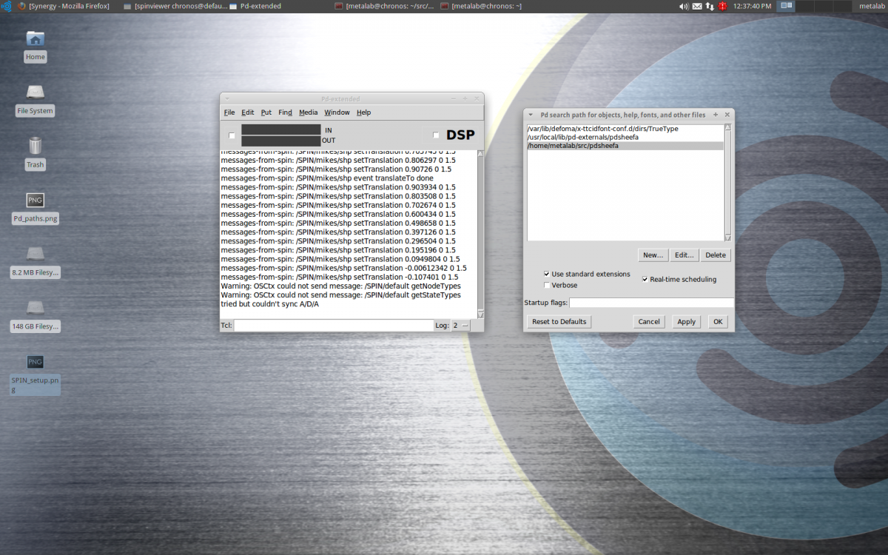

NOTES:
- These instructions are intended for the latest LTR: Ubuntu 12.04 (Precise Pangolin)
- Instructions are terminal commands. Use the CTRL-ALT-T shortcut to open a terminal.
- This guide explains how to get started using SPIN with Pure Data and the example patches from [pdsheefa]. You can use any other software that can send OSC messages, but you will miss out on the example patches.
STEP 1: Setup repositories
SPIN requires some packages not found in the default Ubuntu repositories, so use the following commands to add some new PPAs to your system:
sudo apt-add-repository ppa:sat-metalab/metalab
Whenever you change repositories, you need to update your package list:
sudo apt-get update
STEP 2 (OPTIONAL): Install dependencies
This step is optional, since the spinframework package will automatically require you to install these in step 3. However, this is here for general reference, and for those who may want to compile SPIN from source:
sudo apt-get install doxygen git git-core cmake-curses-gui build-essential \ automake libtool libxml++2.6-dev python-dev python-setuptools \ libboost-dev libboost-filesystem-dev libboost-python-dev libtinyxml-dev \ libboost-regex-dev libboost-thread-dev liblo-dev help2man \ openscenegraph libopenscenegraph-dev libopenthreads-dev \ libboost-program-options-dev libboost-system-dev \ libcppintrospection-3.0-dev libspatosc-0.4-dev
These following dependencies are not required in order to build and run SPIN, but add optional support that will be included if the libraries are present:
For physics, we need Bullet Physics:
sudo apt-add-repository ppa:openrave/release sudo apt-get update sudo apt-get install libbullet-dev
For web services, we use Poco:
sudo apt-get install libpoco-dev
For video textures, we need ffmpeg:
sudo apt-get install ffmpeg
If you have a SpaceNavigator device:
sudo apt-get install libspnav-dev spacenavd
For streaming video textures, we use GStreamer and libshmdata:
sudo apt-get install libgstreamer0.10-dev libgstreamer-plugins-base0.10-dev sudo apt-get install libshmdata-0.8-dev
For point clouds (and support for Microsoft Kinect), we use PointCloudLibrary:
sudo apt-add-repository ppa:v-launchpad-jochen-sprickerhof-de/pcl sudo apt-get update sudo apt-get install libpcl-1.6-all
STEP 3: Install SPIN
option a) Use the package (may be slightly out-of-date):
sudo apt-get install spinframework
option b) Build it from source:
Download the source from the git repository:
git clone git://code.sat.qc.ca/spinframework.git cd spinframework
If you want the bleeding edge (unstable) branch:
git checkout develop
Now build and install:
./one_step_build.sh sudo make install
STEP 4: Install Pd-Extended
The most comprehensive examples for SPIN are written for Pure Data (specifically, Pd-Extended), which is unfortunately not packaged very well.
Try this first:
sudo apt-get install pd-extended
If you get an error that says "E: Couldn't find package pd-extended", try downloading the latest version from the Pd website:
http://puredata.info/downloads/pd-extended
At the time of writing this, there was no 64-bit download for Precise, so we've put one here: Pd-0.43.1-extended-20120430.deb.
STEP 5: Install [pdsheefa]
Download the latest version of pdsheefa from: http://code.sat.qc.ca/downloads/pdsheefa
The file will be compressed. Unpack the archive and move the contents to a place on your hard drive, for example: ~/pd-externals/ or some other location (in this example, you will need to create the 'pd-externals' folder).
Then we will need to open pd-extended and add that path to Pd's list of search paths. For Pd versions 0.43+, select Edit > Preferences from the menu. For older versions, select File > Paths from the menu.
Click the "New" button and use the file browser to show Pd the location where you have placed the pdsheefa files.

STEP 6: Test SPIN
Launch two applications: spinserver and spinviewer.
(you can do this either by opening two terminals and typing one command in each window, or using the Dash).
Launch pd-extended, and open the patch in the pdsheefa/examples folder called 02.SpinWidgets.pd. You will see a connect toggle under the first step, and it should get checked, indicating that the connections are all set up properly.
Toggle the grid on and off to ensure that OSC messages are in fact being transmitted.

Applications, from top left: a pdsheefa patch for Pure Data, spinviewer, spinserver, Pure Data extended at bottom left and a linux terminal at bottom right.
STEP 7: See the examples
Go through all the examples in the pdsheefa/examples that are numbered 01 to 99 and learn about various features of SPIN.